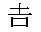

{{APIRef(“Encoding API”)}}
The TextDecoder interface represents a decoder for a specific text encoding, such as UTF-8, ISO-8859-2, KOI8-R, GBK, etc. A decoder takes a stream of bytes as input and emits a stream of code points.
{{AvailableInWorkers}}
This example shows how to decode a Chinese/Japanese character , as represented by five different typed arrays: {{jsxref(“Uint8Array”)}}, {{jsxref(“Int8Array”)}}, {{jsxref(“Uint16Array”)}}, {{jsxref(“Int16Array”)}}, and {{jsxref(“Int32Array”)}}.
let utf8decoder = new TextDecoder(); // default 'utf-8' or 'utf8'
let u8arr = new Uint8Array([240, 160, 174, 183]);
let i8arr = new Int8Array([-16, -96, -82, -73]);
let u16arr = new Uint16Array([41200, 47022]);
let i16arr = new Int16Array([-24336, -18514]);
let i32arr = new Int32Array([-1213292304]);
console.log(utf8decoder.decode(u8arr));
console.log(utf8decoder.decode(i8arr));
console.log(utf8decoder.decode(u16arr));
console.log(utf8decoder.decode(i16arr));
console.log(utf8decoder.decode(i32arr));In this example, we decode the Russian text “Привет, мир!”, which means “Hello, world.” In our {{domxref(“TextDecoder/TextDecoder”, “TextDecoder()”)}} constructor, we specify the Windows-1251 character encoding, which is appropriate for Cyrillic script.
let win1251decoder = new TextDecoder('windows-1251');
let bytes = new Uint8Array([207, 240, 232, 226, 229, 242, 44, 32, 236, 232, 240, 33]);
console.log(win1251decoder.decode(bytes)); // Привет, мир!TextDecoder that will generate a code point stream with the decoding method specified in parameters.The TextDecoder interface doesn’t inherit any properties.
TextDecoder will use.The TextDecoder interface doesn’t inherit any method.
TextDecoder object.{{Specifications}}
{{Compat}}